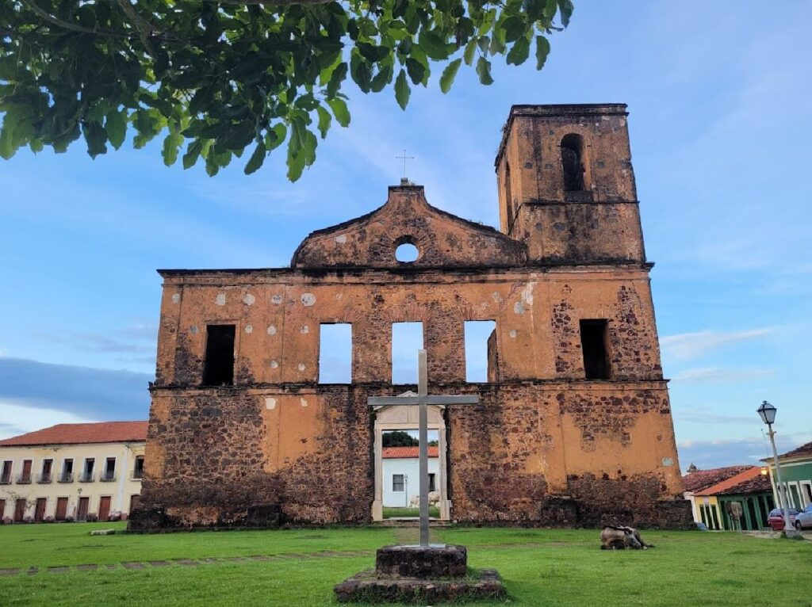
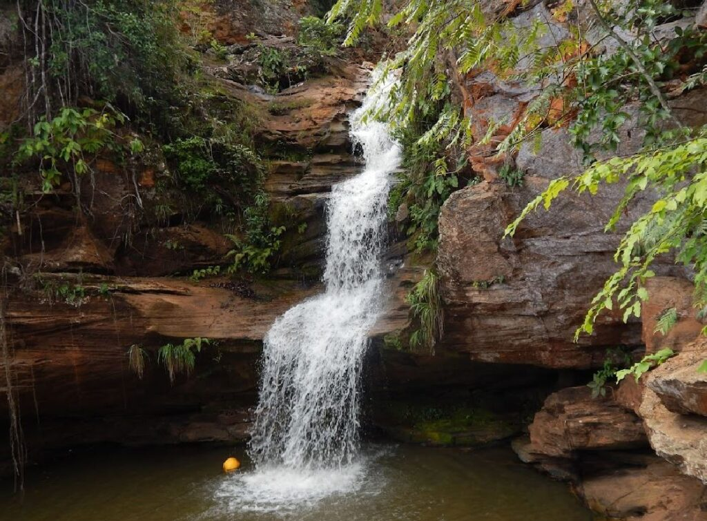

Parque Nacional dos Lençóis MaranhensesOs Lençóis Maranhenses fazem parte dos principais pontos turísticos do Maranhão e é o sonho de consumo de muitos turistas. A paisagem é completamente diferente de tudo, está no top 5 entre os melhores lugares naturais para conhecer no planeta. O Parque Nacional abrange cerca de 1.550 km². Sendo pelo menos 900 de dunas e lagoas que aparecem de forma sazonal. Além disso, são três cidades que ficam no parque: Santo Amaro, Barreirinhas e Primeira Cruz. O turismo em cada uma delas é bem particular, o que permite roteiros variados e que combinam com diversos estilos de turistas

Chapada das Mesas: Chapada das Mesas. Está entre os principais pontos turísticos do Maranhão, e é um dos melhores destinos para quem curte paisagens naturais. O local fica no sul do estado, e a área abrange muitos territórios diferentes, pegando parte dos municípios de Riachão, Carolina e Estreito. O Riachão é muito bonito de visitar, com águas cristalinas e calmas, um verdadeiro paraíso.

Delta do Parnaíba: A região de Delta do Parnaíba fica na divisa entre o estado do Maranhão e do Piauí. Embora a maior parte fique no Maranhão, do lado do Piauí existem mais opções de passeios. Contudo, os destinos turísticos maranhenses, não deixam a desejar. A Rota das Emoções é o passeio mais importante, combinando a visita nos Lençóis Maranhenses, Jericoacoara e Delta do Parnaíba. Unindo os estados do Maranhão, Ceará e Piauí.

Alcântara: A cidade é histórica e está entre os principais pontos turísticos do Maranhão. O município conta com muitas ruínas coloniais, a casa do Doce de Espécie, que tem um grande destaque na culinária Maranhense. Alcântara também conta praias semi desertas muito bonitas e ideal para quem gosta de um estilo mais tranquilo de passeio. É possível acessar São Luís de barco, fazendo uma rápida travessia de 1h. Mas os horários variam de acordo com a maré
Carolina: Se você é um amante da natureza e está procurando um lugar com paisagens deslumbrantes e aventuras incríveis, a Chapada das Mesas é um destino que deve estar na sua lista de viagem. E a cidade de Carolina é a base perfeita para explorar essa região. As cachoeiras são uma das principais atrações da Chapada das Mesas e você pode encontrar várias opções incríveis nas proximidades de Carolina, como a cachoeira do Santuário, a cachoeira do Prata e a cachoeira da Pedra Caída, que é uma das mais famosas da região. Além disso, há muitas outras atrações naturais para se explorar, como grutas, trilhas e piscinas naturais. Mas não é só de natureza que vive a Chapada das Mesas. Em Carolina, há também atrações históricas e culturais, como a Igreja de Nossa Senhora das Dores e o Museu do Cerrado. Além disso, a cidade oferece opções de gastronomia e artesanato local.
